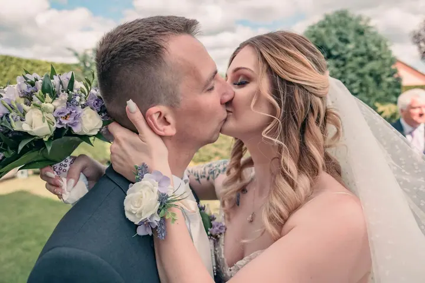
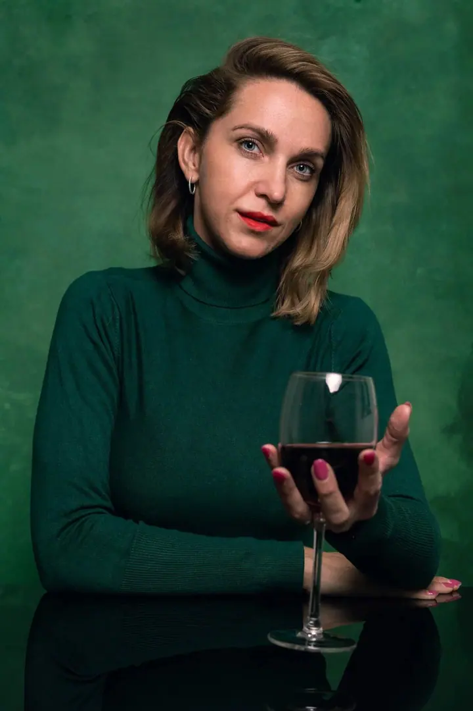
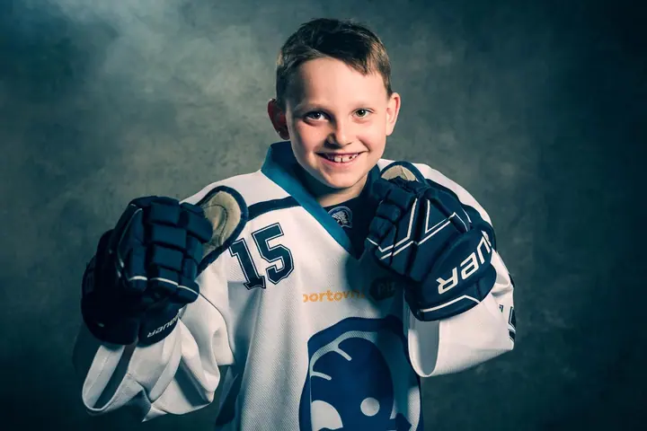

01 / 04
Svatební focení
Zachytím celý váš den v přirozených barvách a emocích, od příprav po večerní zábavu. Balíčky začínají Mini svatbou za 9 000 Kč, k celodennímu focení patří i předsvatební focení.
Zeptat se na termín→






Focení, které vás bude bavit
Zeptat se na termín →(01) Ahoj
Jmenuji se Pavel Vyskočil a jsem svatební, rodinný a ateliérový fotograf z Plzeňského kraje. Dřív jsem programoval obráběcí stroje, dnes „programuji“ úsměvy . Fotím s dobrou náladou v přírodě, u vás doma i ve svém ateliéru na Plzni-jihu.
(02) Co fotím
01 / 04
Zachytím celý váš den v přirozených barvách a emocích, od příprav po večerní zábavu. Balíčky začínají Mini svatbou za 9 000 Kč, k celodennímu focení patří i předsvatební focení.
Zeptat se na termín→02 / 04
Společné chvíle s dětmi i prarodiči, bez stresu a strojených póz. Fotíme v přírodě nebo u vás doma, od 2 200 Kč.
Zeptat se na termín→03 / 04
Uvolněná atmosféra, přirozené výrazy a originální ručně malovaná plátna, která dají vašim fotkám charakter. Pro rodiny, sourozence, páry i jednotlivce, od 2 200 Kč.
Zeptat se na termín→Dále nabízím
V ateliéru máte klid, čas a prostor být sami sebou. Zachytíme jemná gesta a opravdové rodinné chvíle, od 5 000 Kč.
↗(03) Portfolio
Kliknutím fotku zvětšíte · fotografie jsou ilustrační
(04) Postup
Od první zprávy po hotovou galerii.
Krok 1 z 4
Vyplníte krátký formulář nebo mi zavoláte. Odpovídám vždy osobně, protože každý z vás je jiný.
Krok 2 z 4
Probereme termín, místo a vaše představy, u svatby i harmonogram a drobnosti, na které se často zapomíná. Klidně osobně, nebo online.
Krok 3 z 4
Fotíme v pohodě a bez strojených póz. Poradím vám, jak pózovat i jak se uvolnit, a děti rozesmějí maňásci.
Krok 4 z 4
Po svatbě posílám do 24 hodin malý výběr a zbytek do 30 dnů v online galerii a na USB. Z rodinného focení máte do 48 hodin náhledovou galerii k výběru a upravené fotky do 14 dnů.

Svatby jsou krásný chaos. A já je miluju.
(05) Za objektivem
Fotím už od střední školy. Svatby, portréty, rodiny, ale i školky nebo reportáže. Dřív jsem programoval obráběcí stroje, dnes se snažím „programovat“ úsměvy. Život je pestrý a přesně takové mám rád i focení.
Záleží mi na tom, abyste se u focení cítili v pohodě a byli sami sebou. Dospělé uvolním přirozenou konverzací, děti rozesměju maňásky nebo plyšáky. Povedu vás, nebo vás nechám být, podle toho, co vám bude příjemné. Fotky ladím do přirozených barev a teplých tónů.
Působím hlavně v Plzeňském kraji. Nejraději fotím v přírodě, v sadech, u vody nebo na loukách, které dobře znám. Rád přijedu i k vám domů nebo vás přivítám ve svém ateliéru v Lučišti s ručně malovanými plátny. Na svatbu za vámi dojedu i do dalších koutů republiky.
Pavel
Pavel Vyskočil · Svatební, rodinný a ateliérový fotograf
Záleží na balíčku a průběhu dne, ale za každou hodinu focení odevzdávám minimálně 50 upravených fotek. V praxi je jich téměř vždy víc.
Svatební balíčky začínají na 9 000 Kč (Mini svatba, 2 hodiny), celý den stojí 22 000 Kč. Rodinné, ateliérové a těhotenské focení je od 2 200 Kč, newborn od 5 000 Kč.
Děti nejsou modelky a to je na nich skvělé. Mám maňásky, kteří „ovládají foťák“, a nikoho do ničeho nenutím. Malého sportovce klidně posadím na míč.
Doporučuji tlumené odstíny, které spolu ladí, a jednoduché oblečení bez výrazných potisků. Dětem stačí obléct sváteční oblečení až na místě. Když si nejste jistí, rád poradím.
(07) Kontakt
Napište pár vět o tom, co si představujete, a termín, který se vám hodí.